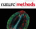
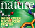
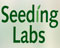
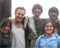
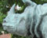
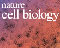
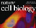
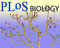
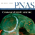
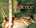

News Archives: Nov 1, 2003 - Jan 6, 2017
40 stories listed.
|
A Role for microRNAs in Amyotrophic Lateral Sclerosis
- Dec. 12, 2009
The great baseball player, Lou Gehrig, gave his name to ... Tags: 2009, Joshua Sanes, Science, publication |
|
|
MCB's Annual Holiday Gift Drive until Tuesday, December 15, 2009
- Dec. 4, 2009
For the fifth year in a row, MCB is organizing ... Tags: 2009, Holiday Gift Drive, charitable work |
|
|  |
Determining Neural Connections using Light
- Nov. 30, 2009
The nematode, C.elegans, with only 302 neurons, is an ... Tags: 2009 |
 |
Annual Thanksgiving Food Drive (Thursday, November 12, until Thursday, November 19, 2009)
- Nov. 20, 2009
For the forth year in a row, MCB Building Operations ... Tags: 2009, Food Drive, charitable work |
|  |
GABA Neurons Turn a Blind Eye
- Nov. 16, 2009
A new study, published in this week’s Nature, that ... Tags: 2009, Nature, Takao Hensch, publication |
|
MCO Faculty Host Undergraduate Student Interns
- Oct. 26, 2009
In Summer 2009, 12 undergraduate students from diverse colleges and ... Tags: 2009, undergraduate education |
|
|
Hidde Ploegh to Deliver 2009 John T. Edsall Lecture
- Oct. 20, 2009
Hidde Ploegh first joined the Department from the Netherlands in ... Tags: 2009, John T. Edsall Lecture, lecture |
|
|  |
Harvard Students to Help 3500 Fellow Scientists in Kenya this Fall
- Oct. 16, 2009
Quick – look at that old piece of equipment gathering dust ... Tags: 2009 |
|
David E. Clapham Presents 2009 Bloch Lecture
- Oct. 5, 2009
On October 15, 2009, the annual Bloch Lecture will be ... Tags: 2009, Bloch Lecture, lecture |
|
|
Life Sciences-HHMI Outreach Summer Program 2009
- Sept. 24, 2009
One chilly July afternoon, five high school biology teachers were ... Tags: MCB Outreach Program, 2009 |
|
|
Susan Mango Tracks Organ Development in the Worm
- Sept. 17, 2009
After developmental biologist Susan Mango received a surprise call announcing ... Tags: 2009, Susan Mango |
|
|
MCB Awards 2009 Peralta and Meselson Prizes to Natalie Funk and Itay Budin
- Sept. 17, 2009
This year’s Peralta Prize was awarded to Natalie Funk ... Tags: 2009, Ernest Peralta Fund Award, Matthew Meselson, Meselson Prize, awards |
|
|  |
Optogenetics in India
- Sept. 1, 2009
As a part of the Harvard-Bangalore Science Initiative (HSBI), Prof ... Tags: 2009, Florian Engert, Harvard-Bangalore Science Initiative, Nature, Venkatesh Murthy, publication |
|
Florian Engert Receives Tenure
- Sept. 1, 2009
Neurobiologist Florian Engert has been promoted to become a tenured ... Tags: 2009, Florian Engert |
|
|
15th Annual Boston Bacterial Meeting to be Held at Science Center June 18-19
- June 8, 2009
Boston Bacterial Meeting (BBM) 2009 will take place Thursday June ... Tags: 2009, Boston Bacterial Meeting, symposium |
|
|  |
Four Hoopes for MCB
- June 3, 2009
Four undergraduates - Brandon Weissbourd in Catherine Dulac’s lab, Alana ... Tags: 2009, Hoopes Prize, awards |
|
Kaloyan Tsanov Wins the Lawrence J. Henderson Prize for His Undergraduate Thesis
- June 3, 2009
Kaloyan Tsanov has been awarded the Lawrence J. Henderson Prize ... Tags: 2009, Lawrence J. Henderson Prize, awards |
|
 |
Serotonin and Smell
- May 27, 2009
A moment’s introspection reveals that our perceptions and actions ... Tags: 2009, Nature Neuroscience, Venkatesh Murthy, publication |
|
Briana Burton Ponders the Oil and Water Problem of DNA Transportation
- May 18, 2009
Each time the world girds itself for a new epidemic ... Tags: 2009, Briana Burton |
|
|  |
Putting the Kinetochore Together
- May 9, 2009
Errors in chromosome segregation can often lead to human disease ... Tags: 2009 |
| (thumbnail not set on original site) |
Out with the Bad in with the Good
- May 5, 2009
Add your voice to the Activity Poll Tags: 2009 |
|
Congratulations 2009 MCB Graduate Student Fellowship Recipients!
- May 4, 2009
We are pleased to announce that the following MCB graduate ... Tags: 2009, Gilliam Fellowship from the Howard Hughes Medical Institute, National Science Foundation Graduate Research Fellowship, awards |
|
|
Emeritus MCB Professor “Untangles” the Double Helix in New Book
- May 4, 2009
James C. Wang, the emeritus Mallinckrodt Professor of Biochemistry and ... Tags: 2009, James C. Wang, Professor Emeritus, book, publication |
|
|
J. Craig Venter to Give Prather Lectures May 8
- April 27, 2009
This year's Prather Lectures will be delivered by J ... Tags: 2009, Prather Lectures, lecture |
|
|
YOU can Save a Life
- April 21, 2009
On April 29, 2009, register as a bone marrow donor. Tags: 2009, charitable work |
|
|
Second Annual EPB Symposium to be Held Saturday April 25
- April 13, 2009
On Saturday, April 25, the second Engineering and Physical Biology ... Tags: 2009, Engineering and Physical Biology Symposium, symposium |
|
|
April 18th Symposium Explores the Richest Biological Reservoir on Earth: Microbial World
- April 13, 2009
Microbes (including bacteria, viruses, fungi, and protists) are ubiquitous on ... Tags: 2009, Microbial Sciences Initiative at Harvard, Microbial Sciences Symposium, symposium |
|
|
Rich Losick Recipient of 2009 Canada Gairdner Award
- April 2, 2009
The Gairdner Foundation announced on March 31 that MCB’s ... Tags: 2009, Canada Gairdner Award, Richard Losick, awards |
|
|
Visual Space within a Dendrite
- March 25, 2009
More than a century ago, famous neuroanatomist and histologist Ramon ... Tags: 2009, Florian Engert, Neuron, publication |
|
|  |
Evolution and Specificity of MAP Kinases
- March 23, 2009
During evolution certain gene families have increased in number following ... Tags: 2009, Nature Cell Biology, Sharad Ramanathan, publication |
|
Leschziner Receives Sloan Foundation Fellowship
- March 23, 2009
Leschziner Receives Sloan Foundation Fellowship Tags: 2009, Sloan Foundation Fellowship, awards |
|
|
Geometric Cue for Protein Localization
- March 6, 2009
Although bacteria are much more architecturally simple than eukaryotic cells ... Tags: 2009, Richard Losick, Science, publication |
|
 |
A Structural Model for the DNA Damage Sensor in Bacterial Nucleotide Excision Repair
- March 5, 2009
Genomic DNA is under a constant attack by various damaging ... Tags: 2009, David Jeruzalmi, Journal of Biological Chemistry, publication |
|
Outreach Program for Teachers Focused on Microbes and Disease
- March 2, 2009
If you were tempted by cookies and coffee outside the ... Tags: MCB Outreach Program, 2009 |
|
|
Buy Daffodils and Support the American Cancer Society
- Feb. 19, 2009
Please support MCB's annual fundraiser to support the American ... Tags: 2009, charitable work |
|
|  |
Connectomics
- Feb. 12, 2009
It is widely believed that in order to understand how ... Tags: 2009, Jeff Lichtman, PLoS Biology, publication |
|  |
Silent Communication
- Jan. 29, 2009
Distant cells in our body talk to each other to ... Tags: 2009, Craig Hunter, Proceedings of the National Academy of Sciences, publication |
|  |
Charting Olfaction
- Jan. 19, 2009
Our brains generally represent the outside world using ordered maps ... Tags: 2009, Markus Meister, Nature Neuroscience, Venkatesh Murthy, publication |
|
Undergraduate Summer Internship Program for Underrepresented Minority Students
- Jan. 7, 2009
The Department of Molecular and Cellular Biology, in partnership with ... Tags: MCB Outreach Program, 2009 |
|
|
After Much Travel, New Professor Alights in Cambridge
- Jan. 6, 2009
Vlad Denic has been around. He’s lived in Belgrade ... Tags: 2009, Vlad Denic, profile |